Scenic Spots
- Although we mainly experienced onsen, we also went to several famous scenic spots in Osaka, Kyoto, and Tokyo:
- Osaka:
- Shinsaibashi
- Universal Studio
- Kyoto:
- Kiyomizu-dera
- Yasaka Shrine
- Chion-in
- Tokyo:
- Senso-ji
- Here are some photos taken during my trip:
 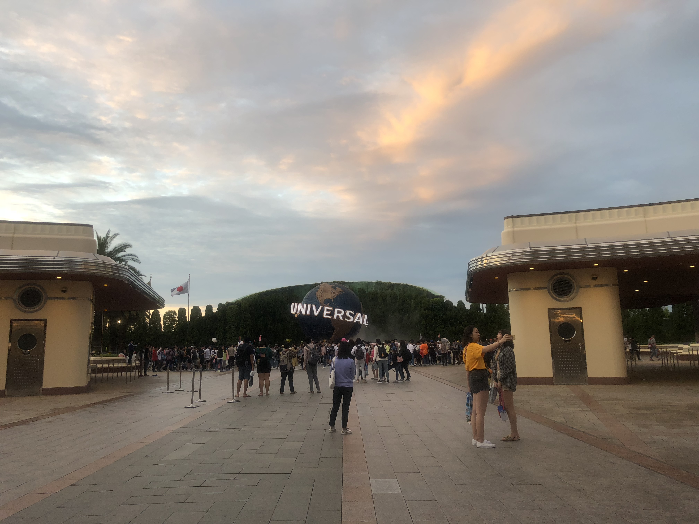
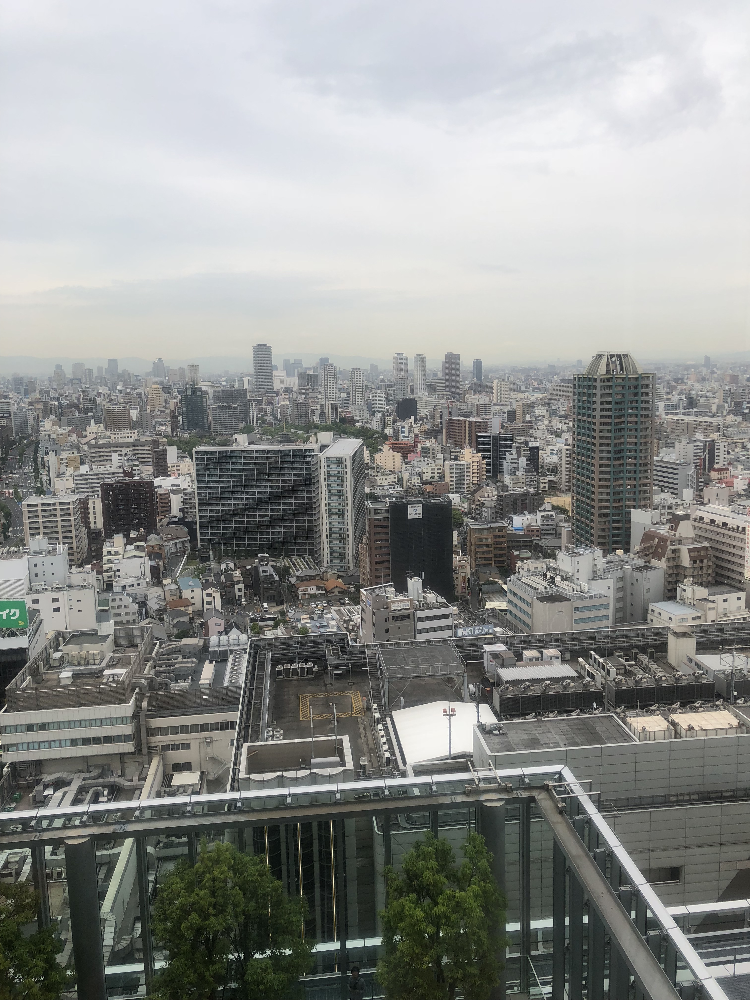
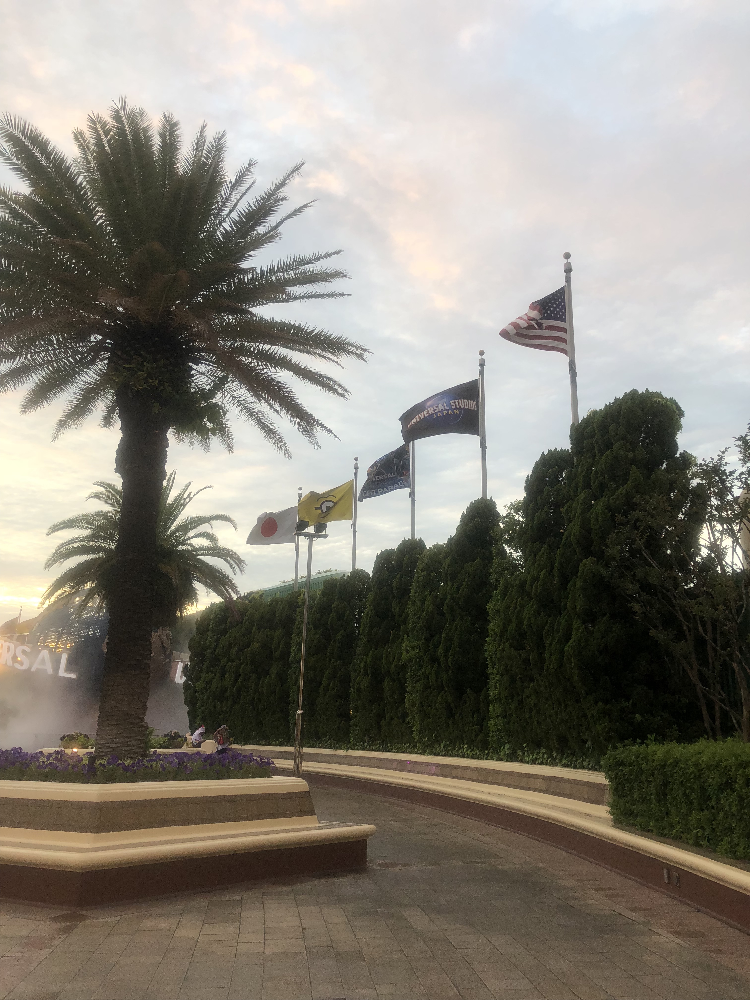
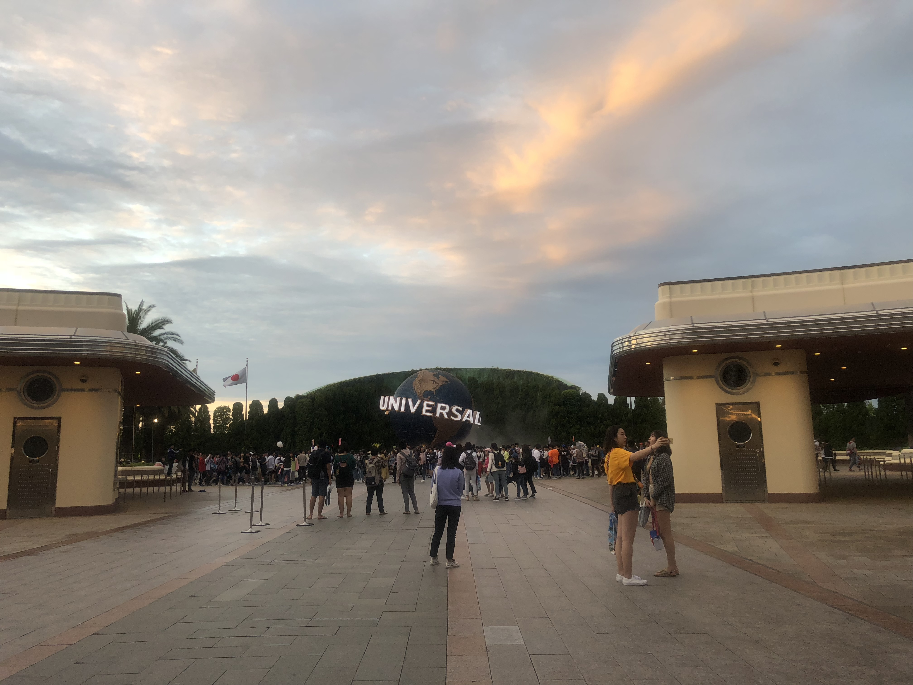
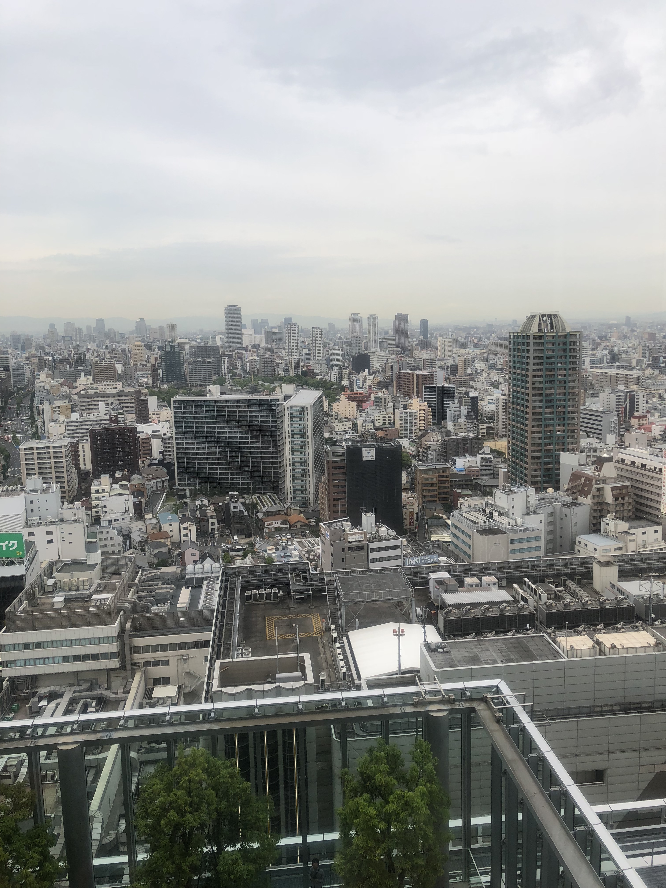
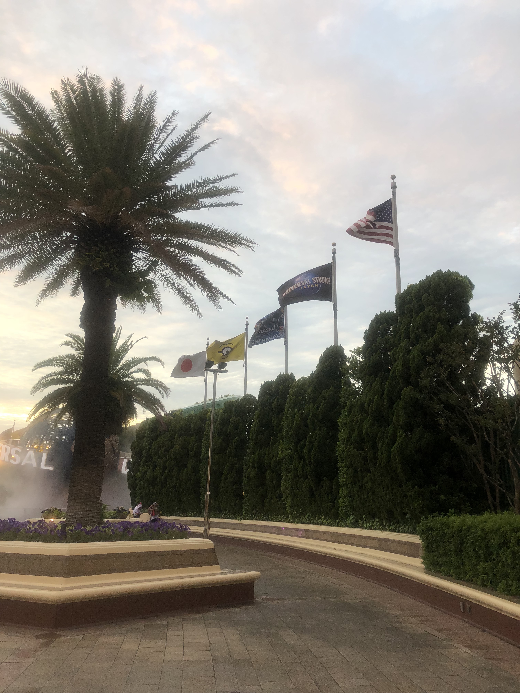
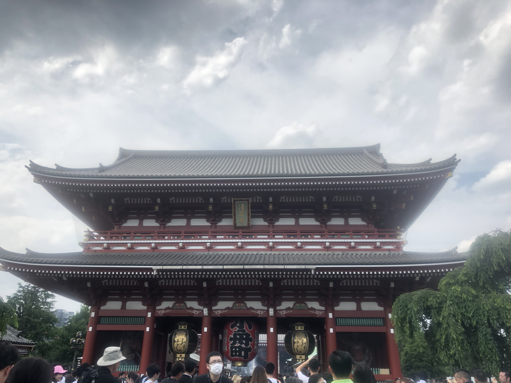
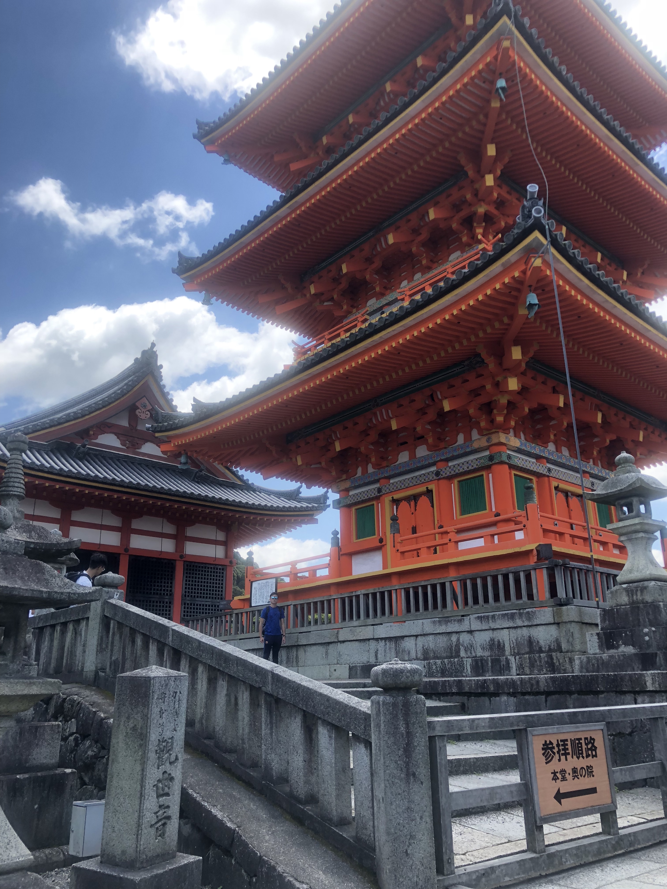
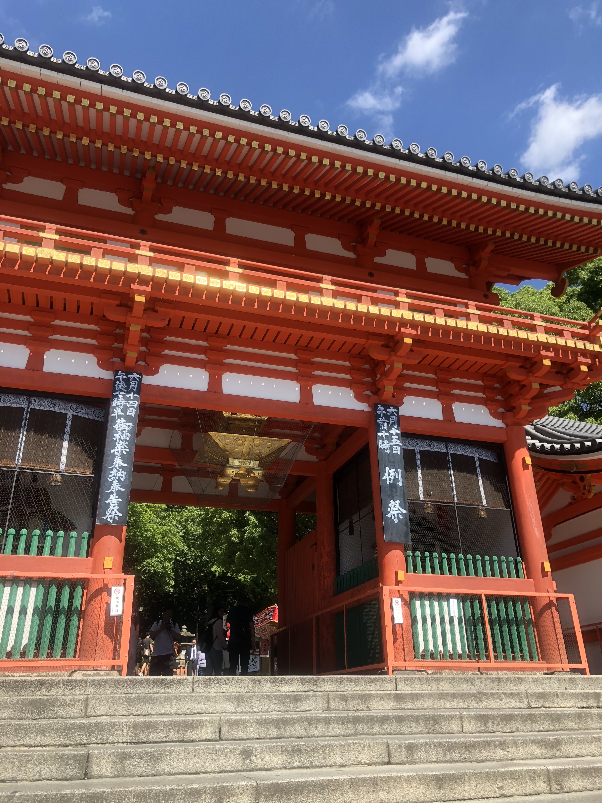
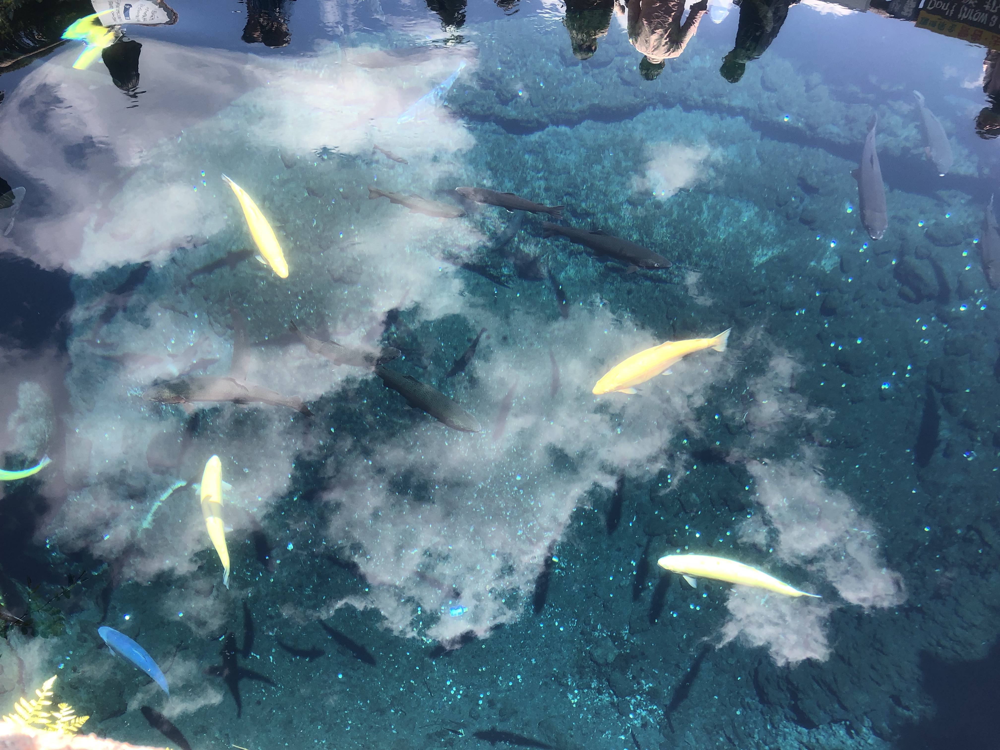
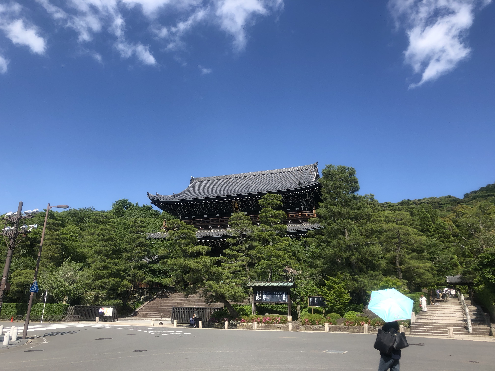
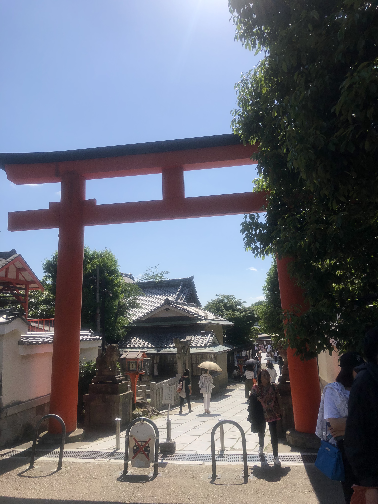
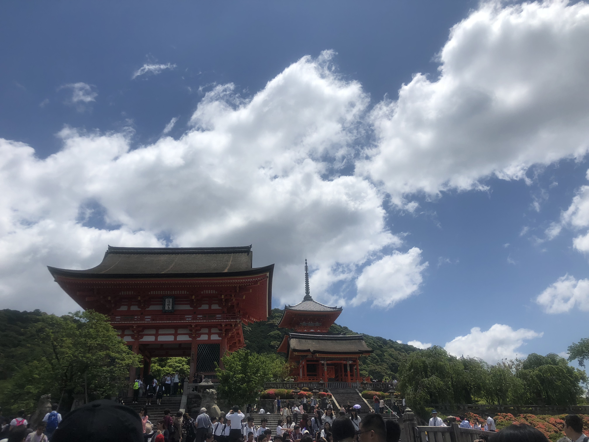
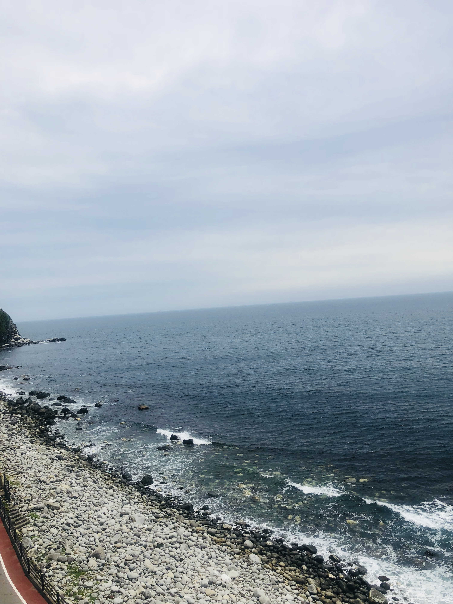